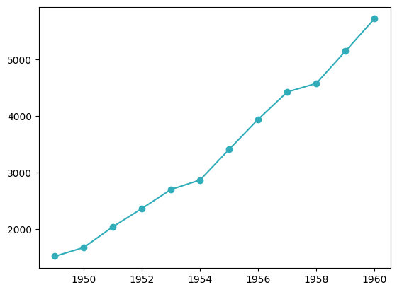
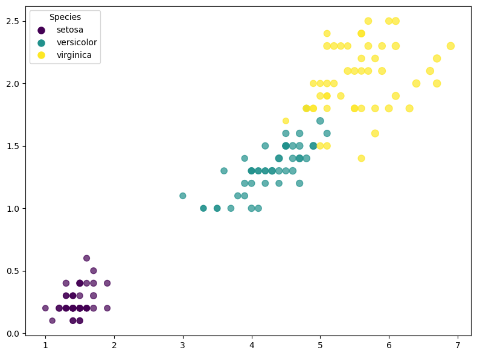
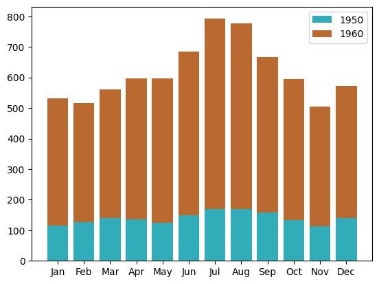
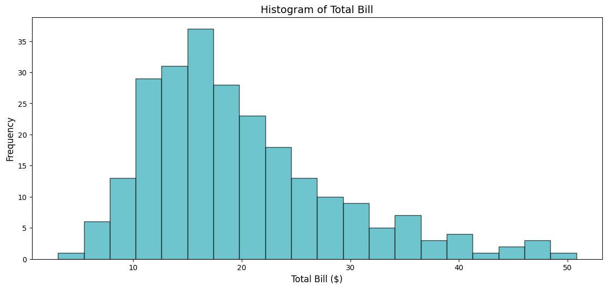
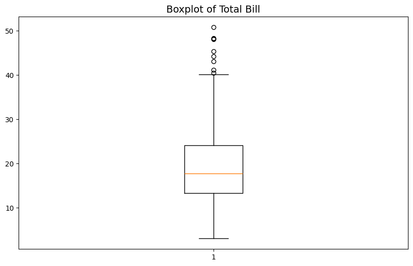
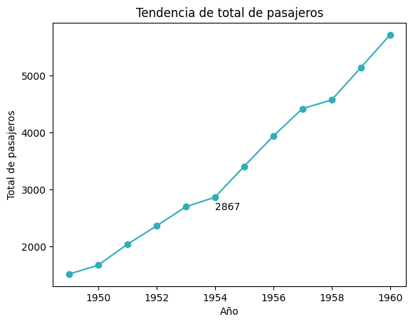
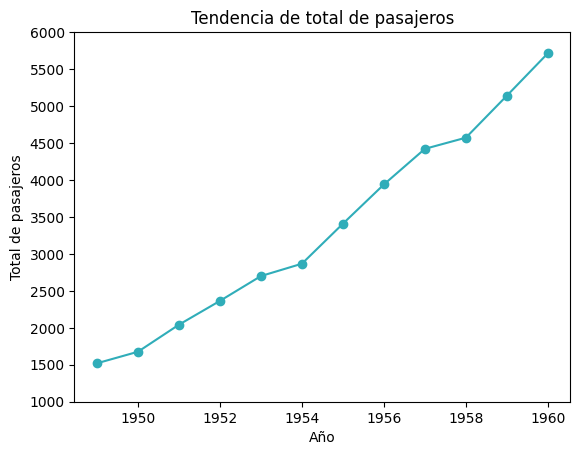

Pyplot#
matplotlib.pyplot es un módulo que contiene una diversa cantidad de funciones útiles para crear gráficas en una interfaz basada en Matlab, aunque también contiene las funciones necesarias para trabajar en una interfaz orientada a objetos.
Interfaz basada en Matlab#
Para crear gráficas en un interfaz basada en Matlab se utiliza las funciones del módulo pyplot, lo que permite llevar un control implícito de los objetos ax y figure, es decir, no es necesario declararlos. Las figuras pueden tener un axes o múltiples axes como se verá a continuación.
Para los ejemplos de esta sección se utilizará el dataset “flights” de la librería Seaborn, además se agrupan los datos por año para las visualizaciones de un solo axes. Para las figuras con más de un axes se crean dos datasets uno para el años 1950 y otro para 1960.
# Cargar el dataset
flights=sns.load_dataset("flights")
# Agrupar datos por año
yearly_data=flights.groupby('year')['passengers'].sum().reset_index()
# Filtrar datos para 1950 y 1960
flights_1950=flights[flights['year'] == 1950]
flights_1960=flights[flights['year'] == 1960]
Figura con un solo axes#
Para crear una figura con un único axes basta con llamar cualquiera de las Funciones de gráficas.
# Llamar a alguna función de pyplot para crear una gráfica.
plt.plot() # Ejemplo con plt.plot()
# Llamar a alguna función de pyplot para personalizar gráficas.
plt.tile() # Ejemplo con plt.title()
...
# Imprimir la gráfica
plt.show()
Notas:
Hacer llamadas de las funciones de
matplotlib.pyplotpara agregar Funciones de gráficas o Funciones de Personalización.Este estilo mantiene un seguimiento de los fig y ax actuales de manera implícita.
Al finalizar para mostrar la gráfica usar
plt.show().
Ejemplo:
En este ejemplo se utiliza directamente la función plt.plot() para crear una figura con un axes, además se hacen llamadas a las funciones plt.xlabel(), plt.ylabel(), plt.title() y plt.legend() para añadir elementos a la gráfica.
# Crear nueva figura (opcional)
plt.figure()
# Graficar los datos
plt.plot(yearly_data['year'],
yearly_data['passengers'],
label='Passengers',
marker='o',
color=azul)
# Agregar elementos
plt.xlabel('Año')
plt.ylabel('Total de pasajeros')
plt.title('Tendencia de total de pasajeros')
plt.legend()
# Imprimir la figura
plt.show()

Figura con múltiples axes#
Para crear una figura con múltiples axes, se usa la función plt.subplot(), en cada llamada se debe de indicar el número total de filas y columnas que tendrá la figura y el indice del axes con el que se estará trabajando en cada llamada.
# Opcionalmente llamar a la función plt.figure()
[plt.figure()]
# Llamar a la función plt.subplot()
plt.subplot(n, m, i1)
# Llamar a alguna función de pyplot para crear una gráfica.
plt.plot() # Ejemplo con plt.plot()
# Llamar a alguna función de pyplot para personalizar gráficas.
plt.tile() # Ejemplo con plt.title()
# Llamar a la función plt.subplot()
plt.subplot(n, m, i2)
# Llamar a alguna función de pyplot para crear una gráfica.
plt.plot() # Ejemplo con plt.plot()
# Llamar a alguna función de pyplot para personalizar gráficas.
plt.tile() # Ejemplo con plt.title()
# Hacer tantas llamadas a las funciones como sea necesario
...
# Imprimir la gráfica
plt.show()
Notas:
Para trabajar con una gráfica en particular hacer una llamada a la función
plt.subplot()indicando el índice y el número total de filas y columnas.Una vez se haya llamado a la función
plt.subplot()indicando el índice, hacer llamadas de las funciones dematplotlib.pyplotpara agregar Funciones de gráficas o para Funciones de Personalización.Este estilo mantiene un seguimiento de los fig y ax actuales de manera implícita.
Al finalizar para mostrar la gráfica usar
plt.show().
Ejemplo:
En este ejemplo se llama a la función plt.subplot() para cada axes en la figura, en este caso se hacen dos llamadas.
# Crear nueva figura (opcional)
plt.figure(figsize=(12, 5))
# Graficar datos de 1950
ax1=plt.subplot(1, 2, 1)
plt.bar(flights_1950['month'], flights_1950['passengers'], color=azul)
plt.title('Pasajeros en 1950')
plt.xlabel('Mes')
plt.ylabel('Número de Pasajeros')
plt.xticks(rotation=45)
# Graficar datos de 1960
plt.subplot(1, 2, 2, sharey=ax1)
plt.bar(flights_1960['month'], flights_1960['passengers'], color=cafe)
plt.title('Pasajeros en 1960')
plt.xlabel('Mes')
plt.xticks(rotation=45)
# Ajustar el layout
plt.tight_layout()
# Imprimir la figura
plt.show()

Configuración#
Funciones para establecer la configuración general de Matplotlib.
Función |
Descripción |
|---|---|
rc(group, **kwargs) |
Modifica la configuración por default de las gráficas. Ver Notas de plt.rc. |
rc_context(rc=None, fname=None) |
Retorna un administrador de contexto para cambiar temporalmente rcParams. |
Restaura el |
Notas de plt.rc#
Warning
Se recomienda antes de modificar las configuraciones estándar, guardar una copia de la configuración:
config_default=plt.rcParams.copy(), alternativamente se puede usar la función plt.rcdefaults().
Para retornar a la configuración por default usar:
plt.rcParams.update(Ipython_default)
rc: Modifica la configuración por default de las gráficas.
# Sintaxis de llamada
plt.rc(group, **kwargs)
group -
str: Es el grupo para el rc. Por ejemplo ‘figure’, ‘axes’, ‘grid’, ‘xtick’, ‘ytick’, ‘patch’, ‘lines’, etc.**kwargs: Son los parámetros de group, para ver todos los grupos y parámetros (están en la forma de group.param_nom) revisar la documentacion
Una forma de definir los parámetros es usando un diccionario donde key es el nombre del parámetro y value es el valor de ese parámetro, posteriormente al llamar la función usar (donde Y es
dict):
plt.rc(group, **Y)Otra forma de definir los valores por default es sobreescribiendo los valores de los keys:
plt.rcParams['group.param']=value
Figuras y Axes#
A continuación se presentan las funciones relacionadas con la creación y manipulaciones de figuras y axes.
Función |
Descripción |
|---|---|
axes(arg=None, **kwargs) |
Añade un |
cla() |
Limpia los Axes actuales. |
clf() |
Limpia la figura actual. |
close(fig=None) |
Cierra una ventana de una figura. |
delaxes(ax=None) |
Elimina un |
fignum_exists(num) |
Indica si existe la figura con la identificación dada. |
figure(num=None, figsize=None, dpi=None, …) |
Crea una nueva figura o activa una figura existente. |
gca() |
Retorna el |
gcf() |
Retorna la figura actual. |
Retorna un |
|
Retorna un |
|
sca(ax) |
Establece el |
subplot(*args, **kwargs) |
Añade un |
subplot2grid(shape, loc, rowspan=1, colspan=1, fig=None, **kwargs) |
Crea un subplot en una ubicación específica dentro de un grid. |
subplot_mosaic(mosaic, …) |
Crea un layout de |
subplots(nrows=1, ncols=1, …) |
Crea una figura y un |
twinx(ax=None) |
Crea y devuelve un segundo eje que comparte el eje x. |
twiny(ax=None) |
Crea y devuelve un segundo eje que comparte el eje y. |
Funciones de gráficas#
Básicas#
Funciones útiles para crear gráficas básicas.
Líneas y Marcadores#
Estas gráficas están relaciones con gráficas de líneas, diagramas de dispersión, entre otras.
Función |
Descripción |
|---|---|
errorbar(x, y, yerr=None, xerr=None, fmt=’’, …) |
Grafica x contra y como línea o markers, junto con errorbars. Los errores se indican como escalar (el mismo para todas las observaciones), como 1D |
eventplot(positions, orientation=’horizontal’, …) |
Grafica líneas paralelas idénticas en las posiciones dadas. |
loglog(*args, **kwargs) |
Crea una gráfica con escala logarítmica en los ejes x e y. |
plot(*args, scalex=True, scaley=True, data=None, **kwargs) |
Grafica y versus x como líneas y/o marcadores. |
scatter(x, y, s=None, c=None, marker=None, …) |
Realiza una gráfica de dispersión dando los valores de los ejes x y y. |
semilogx(*args, **kwargs) |
Crea un gráfico con escala logarítmica en el eje x. |
semilogy(*args, **kwargs) |
Crea un gráfico con escala logarítmica en el eje y. |
stem(*args, linefmt=None, markerfmt=None, …) |
Crea un gráfica con rectas verticales para cada observación desde base hasta head, y con un marcador en head. |
step(x, y, *args, where=’pre’, data=None, **kwargs) |
Crea una gráfica de pasos. |
Notas de plot#
plot: Realiza una gráfica dando los valores de los ejes x y y, ya sean líneas o puntos.
# Sintaxis de llamada
plt.plot([x], y, [fmt], *, data=None, **kwargs)
plt.plot([x], y, [fmt], [x2], y2, [fmt2], ..., **kwargs)
Parámetros:
x, y -
array-likeolabel: Coordenadas de los puntos horizontales y verticales, respectivamente. Si no se especifica x será un rango de 0 alen(y) - 1. Pueden ser etiquetas en caso de que se defina el argumento data.data -
indexable object: Objeto que se pueda aplicarobj['label']y retorne un 1Darray-like, lo más común que sea unDataFrame.fmt -
str: Es una cadena de formato, para indicar cierto formato que debe de tener la gráfica especificamente, el tipo de linea, tipo de marker y el color de los mismos. Ver Cadenas de Formato (fmt).**kwargs: Propiedades de Line2D.
Parámetros en la segunda forma de llamar la función:
xi, yi -
array-likeoscalar: Cordenadas de los puntos horizontales y verticales, respectivamente.fmti -
str: Es una cadena de formato, para indicar cierto formato que debe de tener la gráfica.
Retorna:
listde Line2D.
Ejemplo:
En este ejemplo se utiliza directamente la función plt.plot() para crear una figura con un axes, además se hacen llamadas a las funciones plt.xlabel(), plt.ylabel(), plt.title() y plt.legend() para añadir elementos a la gráfica.
# Crear nueva figura (opcional)
plt.figure()
# Graficar los datos
plt.plot(yearly_data['year'],
yearly_data['passengers'],
marker='o',
color=azul)
# Imprimir la figura
plt.show()

Notas de scatter#
scatter: Realiza una gráfica de dispersión dando los valores de los ejes X y Y.
# Sintaxis de llamada
plt.scatter(x, y, s=None, c=None, *, marker=None, cmap=None, norm=None, vmin=None,
vmax=None, alpha=None, linewidths=None, edgecolors=None, colorizer=None,
plotnonfinite=False, data=None, **kwargs)
Parámetros:
x, y -
array-likeofloat: Cordenadas de los puntos horizontales y verticales, respectivamente.s -
floatoarray-like: Tamaño de los markers en puntos, al cuadrado.c -
array-like,listdecolorocolor: Color de los markers.scalarosecuenciade números: Esos números serán mapeados con cmap, dependiendo del valor se le asignará un color del mapa de color, los número se emparejarán por posición con los valores de x y y, para determinar qué color usar en cada coordenada. Por lo tanto la longitud de la secuencia debe de ser igual que la de x y y.secuenciadecolor: Colores a usar para cada valor de x y y, se empatan por posición y debe de tener la misma longitud que x y y. Ver Colores.color: Un solo color para usar en todos lo puntos. Ver Colores.Se puede usar los valores de una variable categórica para que cada uno tenga un valor diferente. Ver ColorMap.
marker -
MarkeyStyle: Revisar Markers.cmap -
stroColorMap: Mapa de color. Se usa solo si c es unarray-likedefloat. Ver ColorMap.alpha -
float: Para indicar la opacidad de la gráfica. Es un valor entre 0 y 1, donde 0 es completamente transparente y 1 es completamente opaco.linewidths -
floatoarray-like: Grosor del borde de los markers.edgecolors - {‘face’, ‘none’,
None},colorosecuenciadecolor: Color del borde de los markers. Si es ‘face’ será el mismo que el fondo del marker, si es ‘none’ no tendrá color o se puede especificar el color. Ver Colores.**kwargs: Propiedades de los objetos Collection.
Retorna:
Ejemplo:
En este ejemplo se utiliza la función plt.scatter() para crear un diagrama de dispersión entre petal length vs petal width, usando el dataset iris.
# Importar el dataset iris
iris=sns.load_dataset("iris")
# Crear scatterplot: petal length vs petal width
plt.figure(figsize=(8, 6))
scatter=plt.scatter(iris["petal_length"],
iris["petal_width"],
c=iris["species"].astype("category").cat.codes,
s=iris["sepal_length"] * 10,
cmap="viridis",
alpha=0.7)
# Crear leyenda para "species"
species_labels=iris["species"].unique()
colors=scatter.cmap(np.linspace(0, 1, len(species_labels)))
handles=[plt.Line2D([0], [0], marker="o", color="w", markersize=10, markerfacecolor=colors[i]) for i in range(len(species_labels))]
plt.legend(handles, species_labels, title="Species", loc="upper left")
# Imprimir la figura
plt.tight_layout()
plt.show()

Barras#
Gráficas que involucran barras verticales y horizontales.
Función |
Descripción |
|---|---|
bar(x, height, width=0.8, bottom=None, …) |
Crea una gráfica de barras. |
bar_label(container, labels=None, …) |
Genera etiquetas para una gráfica de barras. |
barh(y, width, height=0.8, left=None, …) |
Crea una gráfica de barras horizontales. |
broken_barh(xranges, yrange, …) |
Grafica una secuencia horizontal de rectángulos. |
Notas de plt.bar#
bar: Crea una gráfica de barras.
# Sintaxis de llamada
plt.bar(x, height, width=0.8, bottom=None, *, align='center', data=None, **kwargs)
Parámetros:
x -
floatoarray-like: Coordenadas del eje x, pueden ser las categorías a grafícar o solo una etiqueta.height -
floatoarray-like: Valores que tienen la altura de las barras. Tiene que ser de la misma longitud que x.width -
floatoarray-like: Ancho de las barras.bottom -
floatoarray-like: Coordenas de y, de las bases de las barras. Útil en caso de que quieres apilar varios valores.align - {‘center’, ‘edge’}: Alineación de las etiquetas de las barras en la coordenada x.
**kwargs: Propiedades de Rectangle.
tick_label-strolistdestr: Para modificar las etiquetas de las barras. Debe ser igual a la longitud de x.xerr,yerr-floatoarray-likede shape (N) o (2, N).Si es un escalar: Agrega +/- el valor a todas las barras.
shape(N): Agrega +/- los valores a cada barra.
shape(2, N): Valores separados para la parte negativa y la parte positiva para cada barra. La primer fila son los negativos y la segunda los positivos.
ecolor -
color: Color de las errorbars.
Retorna:
Patrones útles
# Barras apiladas
plt.bar(df.index, df['col1'])
plt.bar(df.index, df['col2'], bottom=df['col1'])
# Barras de dos cantidades independientes
# Usar str con nombre de la categoría
plt.bar("Cat 1", df["col"].agg_func())
plt.bar("Cat 2", df2["col"].agg_func())
# Barras con barras de error (ejm std)
plt.bar("Cat 1", df["col"].agg_func(), yerr=df["col"].std())
plt.bar("Cat 2", df2["col"].agg_func(), yerr=df2["col"].std())
Ejemplo:
En este ejemplo se grafican barras apiladas, para el número de pasajeros en 1950 y 1960.
# Crear gráfica
plt.bar(flights_1950['month'],
flights_1950['passengers'],
color=azul,
label='1950')
# Crear gráfica apilada
plt.bar(flights_1950['month'],
flights_1960['passengers'],
bottom=flights_1950['passengers'],
color=cafe,
label='1960')
# Añadir leyenda
plt.legend()
# Imprimir gráfica
plt.show()

Rectas y áreas#
Gráficas para generar áreas y líneas horizontales y verticales.
Warning
Considerar lo siguiente:
Las rectas aquí presentadas son múltiples rectas en un intervalo. Para graficar una única recta revisar funciones en Rectas y Áreas.
Las áreas aquí presentadas son para rellenar áreas entre curvas o gráficas de áreas. Para generar spans (rectángulos para resaltar zonas en gráficas) ver funciones en Rectas y Áreas.
Función |
Descripción |
|---|---|
fill(*args, data=None, **kwargs) |
Grafica polígonos rellenos. |
fill_between(x, y1, y2=0, where=None, interpolate=False, step=None, …) |
Rellena el área entre dos curvas horizontales (\(y=f(x)\)). |
fill_betweenx(y, x1, x2=0, where=None, step=None, interpolate=False, …) |
Rellena el área entre dos curvas verticales (\(x=g(y)\)). |
hlines(y, xmin, xmax, colors=None, linestyles=’solid’, label=’’, …) |
Grafica líneas horizontales en cada y desde xmin hasta xmax. |
stackplot(x, *args, labels=(), colors=None, baseline=’zero’, data=None, **kwargs) |
Crea una gráfica de áreas apiladas. |
vlines(x, ymin, ymax, colors=None, linestyles=’solid’, label=’’, …) |
Grafica líneas verticales en cada x desde ymin hasta ymax. |
Circulares#
Funciones para crear gráficas circulares.
Función |
Descripción |
|---|---|
pie(x, , …) |
Grafica un gráfico circular. |
polar(*args, **kwargs) |
Crea una gráfica polar. |
Bins#
Gráficas para datos en bins como histogramas.
Función |
Descripción |
|---|---|
hexbin(x, y, …) |
Crea un gráfico de agrupación hexagonal 2D de los puntos x, y. |
hist(x, bins=None, range=None, density=False, weights=None, cumulative=False, …) |
Calcula y grafica un histograma. |
hist2d(x, y, bins=10, range=None, density=False, …) |
Crea un gráfico de histograma 2D. |
stairs(values, edges=None, …) |
Grafica de escalera como una línea con bordes delimitadores o un gráfico relleno. |
Notas de hist#
hist: Realiza un histograma.
# Sintaxis de llamada
plt.hist(x, bins=None, *, range=None, density=False, weights=None, cumulative=False,
bottom=None, histtype='bar', align='mid', orientation='vertical', rwidth=None,
log=False, color=None, label=None, stacked=False, data=None, **kwargs)
Parámetros:
x -
array-likeosecuenciadearray-like: Datos de entrada. Si es una secuencia, los arrays pueden ser de diferentes tamaños.bins -
int,secuenciaostr: Definir los bins del histograma.int: Número de bins en el rango.secuencia: Define los limites de cada bin. Es inclusivo.str: El nombre de una estrategia para hacer los bins, las posibles opciones son ‘auto’, ‘fd’, ‘doane’, ‘scott’, ‘stone’, ‘rice’, ‘sturges’, o ‘sqrt’.
range -
tupleoNone: Rango de los bins. Ignorado si bins essequence. Por default es(x.min(), x.max()).density -
bool: Para indicar que retorne la densidad de probabilidad (eje y entre 0 y 1).cumulative -
bool: Para indicar si realizar el histograma cumulativo. Si es -1 entonces la acumulación es al revés (empieza acumulado y se van restando los nuevos valores).histtype - {‘bar’, ‘barstacked’, ‘step’, ‘stepfilled’}: Tipo de histograma.
align - {‘left’, ‘mid’, ‘right’}: Alineación de las barras.
orientation - {‘vertical’, ‘horizontal’}: Orientación de las barras.
stacked -
bool: Para indicar, en caso de múltiples datos, que las barras se apilen.**kwargs: Propiedades de Patch.
Retorna:
n -
arrayolistdearray: Valores de los bins (alturas de las barras).bins -
array: Extremos de los bins.patches -
BarContainer,listdePolygonolistde esos objetos: Contenedor de los artistas individuales usados para crear el histograma.
Ejemplo: En este ejemplo se gráfica el histograma de la columna total_bill del dataset tips.
# Importar el dataset
tips=sns.load_dataset("tips")
# Crear la figura
plt.figure(figsize=(14, 6))
# Graficar el histograma
plt.hist(tips['total_bill'], bins=20, color=azul, edgecolor='black', alpha=0.7)
plt.title('Histogram of Total Bill', fontsize=14)
plt.xlabel('Total Bill ($)', fontsize=12)
plt.ylabel('Frequency', fontsize=12)
# Imprimir la figura
plt.show()

Campos Vectoriales#
Funciones para graficar campos vectoriales.
Función |
Descripción |
|---|---|
barbs(*args, data=None, **kwargs) |
Grafica un campo 2D de púas. |
quiver(*args, data=None, **kwargs) |
Grafica un campo 2D de flechas. |
quiverkey(Q, X, Y, U, label, **kwargs) |
Agrega una clave a una gráfica quiver. |
streamplot(x, y, u, v, density=1, linewidth=None, color=None, cmap=None, …) |
Grafica líneas de corriente de un flujo vectorial. |
Contornos#
Funciones para gráficar de contornos. Útiles para representaciones 2D de de gráficas 3D.
Función |
Descripción |
|---|---|
clabel(CS, levels=None, **kwargs) |
Etiqueta un una gráfica de contorno. |
contour(*args, data=None, **kwargs) |
Grafica líneas de contorno. |
contourf(*args, data=None, **kwargs) |
Grafica contornos rellenos. |
Espectral#
Funciones útiles para diagramas espectrales, utilizados para analizar frecuencias y estructuras cíclicas.
Función |
Descripción |
|---|---|
acorr(x, …) |
Grafica la autocorrelación de x. |
angle_spectrum(x, …) |
Grafica el espectro de ángulos. |
cohere(x, y, …) |
Grafica la coherencia entre x y y. |
csd(x, y, …) |
Grafica la densidad espectral cruzada. |
magnitude_spectrum(x, …) |
Grafica el espectro de magnitudes. |
phase_spectrum(x, …) |
Grafica el espectro de fases. |
psd(x, …) |
Grafica la densidad espectral de potencia. |
specgram(x, …) |
Grafica un espectrograma. |
xcorr(x, y, …) |
Grafica la correlación cruzada entre x y y. |
Estadísticas#
Funciones útiles para gráficar visualizaciones estadísticas como boxplots, funciones acumuladas de probabilidad, entre otros.
Función |
Descripción |
|---|---|
boxplot(x, …) |
Genera una gráfica de caja y bigotes. Retorna un diccionario que contiene las siguientes keys: boxes, medians, whiskers, caps, fliers, means. |
ecdf(x, weights=None, …) |
Calcula y grafica la función de distribución acumulada de x. |
violinplot(dataset, …) |
Genera una gráfica de violín. |
Notas de plt.boxplot#
boxplot: Crea un boxplot por cada columna que se le pase.
# Sintaxis de llamada
plt.boxplot(x, *, notch=None, sym=None, vert=None, orientation='vertical', whis=None,
positions=None, widths=None, patch_artist=None, bootstrap=None,
usermedians=None, conf_intervals=None, meanline=None, showmeans=None,
showcaps=None, showbox=None, showfliers=None, boxprops=None, tick_labels=None,
flierprops=None, medianprops=None, meanprops=None, capprops=None,
whiskerprops=None, manage_ticks=True, autorange=False, zorder=None,
capwidths=None, label=None, data=None)
Parámetros:
x -
arrayosecuenciade2D array: Los datos.notch -
bool:Falsepara que se la figura sean rectángulos.Truepara que tengan hendiduras en la media.vert -
bool: Para indicar si los boxes deben ser verticales (True) u horizontales (False).
Retorna:
dict: Diccionario que contiene las siguientes keys: boxes, medians, whiskers, caps, fliers, means.
Ejemplo: En este ejemplo se gráfica el histograma de la columna total_bill del dataset tips.
# Crear la figura
plt.figure(figsize=(10, 6))
# Graficar el histograma
plt.boxplot(tips['total_bill'])
plt.title('Boxplot of Total Bill', fontsize=14)
# Imprimir la figura
plt.show()

Arreglos 2D#
Funciones para generar visualizaciones a partir de datos contenidos en arreglos.
Función |
Descripción |
|---|---|
figimage(X, …) |
Agrega una imagen no remuestreada a la figura. |
imshow(X, cmap=None, norm=None, …) |
Muestra un array como una imagen. |
matshow(A, fignum=None, **kwargs) |
Muestra un arreglo como matriz en una nueva figura. |
pcolor(*args, …) |
Crea una gráfica de pseudocolor con una cuadrícula rectangular no regular. |
pcolormesh(*args, …) |
Crea una gráfica de pseudocolor con una cuadrícula rectangular no regular. |
spy(Z, …) |
Traza el patrón de un arreglo 2D sparse. |
Rectas y Áreas#
Funciones para añadir rectas y áreas a gráficas.
Caution
Para añadir n rectas en un intervalo o agregar áreas entre curvas o áreas con formas más complejas (polígonos) revisar funciones de Rectas y áreas.
Función |
Descripción |
|---|---|
axhline(y=0, xmin=0, xmax=1, **kwargs) |
Añade una línea horizontal a la gráfica. |
axhspan(ymin, ymax, xmin=0, xmax=1, **kwargs) |
Agrega un área (rectángulo horizontal) a la gráfica. |
axline(xy1, xy2=None, …) |
Agrega una línea recta infinitamente larga. |
axvline(x=0, ymin=0, ymax=1, **kwargs) |
Añade una línea vertical a la gráfica. |
axvspan(xmin, xmax, ymin=0, ymax=1, **kwargs) |
Agrega un tramo vertical (rectángulo) a la gráfica. |
Ejemplo En el siguiente ejemplo se añade una recta horizontal en y un área entre 1953 y 1954:
plt.figure()
# Graficar los datos
plt.plot(yearly_data['year'],
yearly_data['passengers'],
marker='o',
color=azul)
# Añadir recta horizontal
plt.axhline(4500, color=cafe)
# Añadir área vertical
plt.axvspan(1953, 1954, color=cafe_claro, alpha=.3)
# Imprimir la figura
plt.show()

Texto y Anotaciones#
Funciones útiles para añadir texto y otras anotaciones a las gráficas o a las figuras.
Función |
Descripción |
|---|---|
annotate(text, xy, …) |
Agrega un texto a una gráfica para resaltar algún punto. Es posible agregar una flecha que apunte hacia un punto en particular y se agrege un texto. |
arrow(x, y, dx, dy, **kwargs) |
Añade una flecha al |
figlegend(*args, **kwargs) |
Coloca una leyenda en la figura. |
figtext(x, y, s, fontdict=None, **kwargs) |
Añade texto a la figura. |
legend(*args, **kwargs) |
Coloca una leyenda en el |
table(cellText=None, …) |
Agrega una tabla a un |
text(x, y, s, fontdict=None, **kwargs) |
Agrega un texto al |
Notas de annote#
annotate: Agrega un texto a una gráfica para resaltar algún punto de la gráfica bajo una condición. Es posible agregar una flecha que apunte hacia un punto en particular y se agrege un texto.
# Sintaxis de llamada
plt.annotate(text, xy, *args, xycoords='data', **kwargs)
Parámetros:
text -
str: La cadena que se mostará en la gráfica.xy -
secuenciadefloat: Es la posición del punto a resaltar, debe ser la misma escala que usan los ejes.xytext -
secuenciadefloat: Es para indicar la posición del texto, es útil en caso de que en xy se sobre encime con muchas cosas.xycoords -
str,Artist,Transformocallable: Sistema de coordenadas para el argumetno xy. Consultar la documentación para más información.arrowprops -
dict: Es para crear una fecha que una el texto (xytext) con el punto xy, es útil en caso de que moviste de lugar el texto con xytext, se utiliza un diccionario para cambiar las propiedades de la flecha (la key es el nombre de la propiedad values el es valor de la propiedad). Si se quiere la flecha en su formato por default poner un diccionario vacío (con ‘’ odict()). Para ver las posibles keys consultar los parámetros de FancyArrowPatch.**kwargs: Propiedades de Text.
Retorna:
Annotation.
Ejemplo
En este ejemplo se añade el número de pasajeros exactos en el año 1954.
# Crear figura
plt.figure()
# Graficar los datos
plt.plot(yearly_data['year'],
yearly_data['passengers'],
label='Passengers',
marker='o',
color=azul)
# Añadir etiquetas y título
plt.xlabel('Año')
plt.ylabel('Total de pasajeros')
plt.title('Tendencia de total de pasajeros')
# Añadir texto en el punto 1954
plt.annotate("2,867",
xy=[1954, 2867],
xytext=[1954, 2000],
arrowprops={"arrowstyle":"->", "color":"gray"})
# Show the plot
plt.show()

Notas de text#
text: Agrega texto a un Axes en las coordenadas de x y y.
# Sintaxis de llamada
plt.text(x, y, s, fontdict=None, **kwargs)
Parámetros:
x, y -
float: Posición en el cual colocar el texto. Los valores son en la misma escala que los ejes. Excepto si se aplica una transformación, con el parámetro transform.s -
str: El texto a mostrar.fontdict -
dict: Diccionario que sirve para especificar la apariencia del texto (propiedades deText), los keys son los nombres de las propiedades y values sus respectivos valores.**kwargs: Propiedades de Text.
Retorna:
Text.
Ejemplo:
En este ejemplo se añade el número de pasajeros exactos en el año 1954.
# Crear figura
plt.figure()
# Graficar los datos
plt.plot(yearly_data['year'],
yearly_data['passengers'],
marker='o',
color=azul)
# Añadir etiquetas y título
plt.xlabel('Año')
plt.ylabel('Total de pasajeros')
plt.title('Tendencia de total de pasajeros')
# Añadir texto en el punto 1954
plt.text(1954, 2650, "2867")
# Show the plot
plt.show()

Triangulos no Estructurados#
Funciones para crear gráficas de mallas no estructuradas. Este tipo de mallas se compoenen de puntos espaciados de manera irregular conectados por elementos triangulares, una aplicación común es visualización de datos geoespaciales.
Función |
Descripción |
|---|---|
tricontour(*args, **kwargs) |
Grafica líneas de contorno en una cuadrícula triangular no estructurada. |
tricontourf(*args, **kwargs) |
Grafica regiones de contorno en una cuadrícula triangular no estructurada. |
tripcolor(*args, …) |
Crea una gráfica de pseudocolor de una cuadrícula triangular no estructurada. |
triplot(*args, **kwargs) |
Grafica una cuadrícula triangular no estructurada como líneas y/o marcadores. |
Funciones de Personalización#
Funciones para personalización de las gráficas. Las funciones aquí presentadas funcionan principalmente para los Axes.
Títulos y etiquetas#
Funciones para establecer los títulos y etiquetas de figuras, axes y ejes.
Función |
Descripción |
|---|---|
suptitle(t, **kwargs) |
Añade un subtítulo centrado a la figura. Es útil en figuras que tienen más de un gráfica. |
title(label, fontdict=None, loc=None, pad=None, …) |
Establece un título para el |
xlabel(xlabel, fontdict=None, labelpad=None, …) |
Establece la etiqueta para el eje x. |
ylabel(ylabel, fontdict=None, labelpad=None, …) |
Establece la etiqueta para el eje y. |
Patrones útiles:
# Establecer título de la figura
plt.suptitle('Title')
# Establecer etiqueta del eje x
plt.xlabel('x label')
# Establecer etiqueta del eje y
plt.ylabel('y label')
# Establecer título
plt.title('title')
Leyenda#
Funciones para añadir leyendas a las gráficas.
Función |
Descripción |
|---|---|
figlegend(*args, **kwargs) |
Coloca una leyenda en la figura. |
legend(*args, **kwargs) |
Coloca una leyenda en el |
Notas de legend#
legend: Añade una leyenda a un Axes. Si no se pone ningún argumento, se infieren los argumentos, por las gráficas presenten en el Axes, el nombre que se mostrará en la leyenda será al que se le puso a cada gráfica con el argumento label. Si una gráfica no tiene label no se mostrará en la leyenda.
# Sinxis de llamada
plt.legend(labels=None, loc='best', ncol=1, labelcolor=None, fontsize=None,
facecolor='white', edgecolor 'black', title=None, title_fontsize=None)
Parámetros:
labels -
listdestr: Nombres a mostrar en la leyenda, debe ser de la misma longitud que el número de gráficas y en el mismo orden queAxes.loc -
str,into2-tupledefloat: Posición de la leyenda en la gráfica. Si esstrointver más abajo la tabla de posibles valores. Si estuplees la posición en el eje x y y, es un valor entre 0 y 1.ncol -
int: Número de columnas en la leyenda.labelcolor -
strolistdestr: Color de las etiquetas en la leyenda.fontsize - {‘xx-small’, ‘x-small’, ‘small’, ‘medium’, ‘large’, ‘x-large’, ‘xx-large’}: Tamaño de la fuente de la leyenda.
facecolor ‘inherit’ o -
color: Color del fondo de la leyenda.edgecolor ‘inherit’ o -
color: Color del borde de la leyenda.title -
stroNone: Título de la leyenda.title_fontsize - {‘xx-small’, ‘x-small’, ‘small’, ‘medium’, ‘large’, ‘x-large’, ‘xx-large’}: Tamaño del título de la leyenda.
Retorna:
Legend.
Posibles valores del parámetro loc, como cadena o como entero:
loc <str/> |
loc <int> |
|---|---|
|
0 |
|
1 |
|
2 |
|
3 |
|
4 |
|
5 |
|
6 |
|
7 |
|
8 |
|
9 |
|
10 |
Grids#
Funciones para establecer o configurar el grid (líneas de cruadrículas) en las gráficas.
Función |
Descripción |
|---|---|
grid(visible=None, which=’major’, axis=’both’, **kwargs) |
Configuración de las líneas de la cuadrícula. |
rgrids(radii=None, labels=None, angle=None, fmt=None, **kwargs) |
Recupera o establece las líneas de cuadrícula radiales en el gráfico polar actual. |
thetagrids(angles=None, labels=None, fmt=None, **kwargs) |
Recupera o establece las líneas de cuadrícula theta en la gráfica polar actual. |
Ejes#
En esta sección se enlistan las funciones relacionadas con los ejes de los objetos Axes.
Funciones generales#
Funciones para manipular los ejes en general.
Función |
Descripción |
|---|---|
axis(arg=None, /, …) |
Método de conveniencia get o set de algunas propiedades del eje. |
box(on=None) |
Activa o desactiva el cuadro de ejes en los ejes actuales. |
Escala#
Funciones para establecer la escala de los ejes.
Función |
Descripción |
|---|---|
autoscale(enable=True, axis=’both’, tight=None) |
Escala automáticamente la vista del eje a los datos. |
xscale(value, **kwargs) |
Establece la escala del eje x. |
yscale(value, **kwargs) |
Establece la escala del eje y. |
Ejemplo
En este ejemplo se ajustan las escalas en ambos ejes a una escalar logarítmica para que los datos se puedan visualizar de mejor manera.
# Importar dataset
planets=sns.load_dataset("planets")
# Crear gráfica
plt.figure(figsize=(8, 6))
plt.scatter(planets['orbital_period'], planets['distance'], color=azul, alpha=0.3)
# Ajustar escalar en ambos ejes
plt.xscale('log')
plt.yscale('log')
# Imprimir la figura
plt.show()

Límites#
Funciones para establecer los límites de los ejes, es decir, el rango de valores en los ejes.
Función |
Descripción |
|---|---|
xlim(*args, **kwargs) |
Recupera o establece los límites x de los ejes actuales. |
ylim(*args, **kwargs) |
Recupera o establece los límites y de los ejes actuales. |
Tip
Otras formas de establecer los límites:
plt.axis([xmin, xmax, ymin, ymax], *args)
gca().set(xlim=(xmin, xmax), ylim=(ymin, ymax))
Ticks#
Funciones para configurar los ticks en los ejes. Los ticks son los valores en los ejes, ya sean numéricos o categóricos. Se puede configurar sus ubicaciones, sus valores, la cantidad, etc.
Función |
Descripción |
|---|---|
locator_params(axis=’both’, tight=None, **kwargs) |
Controla el comportamiento de los localizadores de major ticks. |
Remueve los minor ticks del |
|
Muestra los minor ticks del |
|
tick_params(axis=’both’, **kwargs) |
Modifica la apariencia de los ticks, sus etiquetas y las líneas de cuadrícula. |
ticklabel_format(axis=’both’, style=’’, …) |
Configura el |
xticks(ticks=None, labels=None, …) |
Recupera o establece las ubicaciones y las etiquetas de los ticks del eje x. |
yticks(ticks=None, labels=None, …) |
Recupera o establece las ubicaciones y las etiquetas de los ticks del eje y. |
Ejemplo:
En este ejemplo se modifican los ticks del eje y. Por default, en esa gráfica, se muestran los ticks del 2,000 al 5,000, con un paso de 1,000. Con esta nueva configuración se muestran desde 1,000 hasta 6,000 con un paso de 500.
# Crear figura
plt.figure()
# Graficar los datos
plt.plot(yearly_data['year'],
yearly_data['passengers'],
marker='o',
color=azul)
# Añadir etiquetas y título
plt.xlabel('Año')
plt.ylabel('Total de pasajeros')
plt.title('Tendencia de total de pasajeros')
plt.yticks(list(range(1000, 6500, 500)))
# Show the plot
plt.show()

Layout#
Funciones para configurar el layout de las gráficas.
Función |
Descripción |
|---|---|
margins(*margins, x=None, y=None, tight=True) |
Establece o retorna los márgenes de escala automática. |
subplot_tool(targetfig=None) |
Inicializa una ventana de herramientas de subplot para una figura. |
subplots_adjust(left=None, bottom=None, right=None, top=None, wspace=None, hspace=None) |
Ajusta los parámetros del layout para subplots. |
tight_layout(*, pad=1.08, h_pad=None, w_pad=None, rect=None) |
Ajusta el espacio entre y alrededor de los subplots. |
Colormapping#
Funciones para recuperar o establecer propiedades relacionadas con el mapeo de colores de los datos en la gráfica.
Función |
Descripción |
|---|---|
clim(vmin=None, vmax=None) |
Establece los límites de color de la imagen actual. |
colorbar(mappable=None, cax=None, ax=None, **kwargs) |
Agrega una barra de colores a un gráfico. |
gci() |
Recupera el colorable artist actual. |
get_cmap(name=None, lut=None) |
Recupera una instancia de |
imread(fname, format=None) |
Lee una imagen de un archivo como un arreglo. |
imsave(fname, arr, **kwargs) |
Asigna colores y guarda un arreglo como una imagen localmente. |
sci(im) |
Establece la imagen actual. |
set_cmap(cmap) |
Establece el colormap predeterminado y lo aplica a la imagen actual. |
Otros#
Otras funciones.
Función |
Descripción |
|---|---|
connect(s, func) |
Vincula la función func a el evento s. |
disconnect(cid) |
Desconecta el callback con id cid. |
findobj(o=None, match=None, include_self=True) |
Encuentra objetos artist. |
get(obj, *args, **kwargs) |
Retorna el valor de una propiedad de un |
Retorna el administrador de figuras de la figura actual. |
|
getp(obj, *args, **kwargs) |
Retorna el valor de una propiedad de un |
ginput(n=1, timeout=30, show_clicks=True, mouse_add=MouseButton.LEFT, mouse_pop=MouseButton.RIGHT, mouse_stop=MouseButton.MIDDLE) |
Llamada de “bloqueo” para interactuar con una figura. |
new_figure_manager(num, *args, **kwargs) |
Crea una nueva instancia de administrador de figuras. |
set_loglevel(*args, **kwargs) |
Configure los niveles de logging de Matplotlib. |
setp(obj, *args, **kwargs) |
Establece una o más propiedades en un |
waitforbuttonpress(timeout=-1) |
Llamada de “bloqueo” para interactuar con la figura. |
xkcd(scale=1, length=100, randomness=2) |
Activa el modo de dibujo sketch-style xkcd. |
Producción#
Funciones para configurar la visualización de las gráficas.
Función |
Descripción |
|---|---|
draw() |
Vuelve a dibujar la figura actual. |
Vuelve a dibujar la figura actual si está en modo interactivo. |
|
Se conecta al hook de visualización del shell actual. |
|
ioff() |
Desactiva el modo interactivo. |
ion() |
Habilita el modo interactivo. |
Indica si los gráficos se actualizan después de cada comando de graficado. |
|
pause(interval) |
Ejecuta el cíclo de eventos de la GUI durante por intervalos de segundos. |
savefig(*args, **kwargs) |
Almacena la figura actual localmente. |
show(*, block=None) |
Imprime todas las figuras abiertas. |
switch_backend(newbackend) |
Establece el backend de pyplot. |
Se deconecta del hook de visualización del shell actual. |